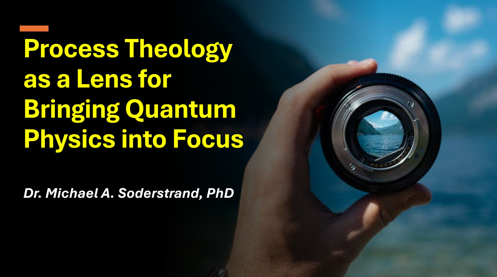
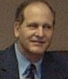

This lecture series explores how Process Theology can provide a conceptual framework for understanding modern quantum physics.
You may have heard that in quantum physics a cat can be both alive and dead at the same time. We will examine that claim carefully and show why it is often misunderstood.
You may have heard that particles somehow explore multiple paths simultaneously to find the best route. We will examine what the quantum model actually says—and what it does not say.
You may have heard that quantum physics is strange, mysterious, and impossible to understand. Our goal is exactly the opposite: to show how the theory can be understood in a natural, intuitive, and intellectually satisfying way.
| Lecture | Title | Date | PPTX | MP4 Video | |
|---|---|---|---|---|---|
| 1 | Introduction: Why the Language of Process Theology is Perfect for Quantum Physics | June 16, 2026 | Download PDF | Download PPTX | Download MP4 |
| 2 | The Standard Model → Detected Events (Actual occasions) | June 23, 2026 | Download PDF | Download PPTX | Download MP4 |
| 3 | From Particles to Equations → Structured Possibility (Primordial nature) | June 30, 2026 | Download PDF | Download PPTX | Download MP4 |
| 4 | Quantization: Building the Quantum State Machine → Ordered Indeterminacy (Creativity under constraint) | July 7, 2026 | Download PDF | Download PPTX | Download MP4 |
| 5 | Running the Model: Time Evolution and Becoming → Creative Advance (Ordered process becoming form) | July 14, 2026 | Download PDF | Download PPTX | Download MP4 |
| 6 | The Single Slit Experiment → Tendency and Pattern (Lure / aim expressed probabilistically) | July 21, 2026 | Download PDF | Download PPTX | Download MP4 |
| 7 | Bound States: The Hydrogen Atom and Stable Matter → Enduring Relations (Societies with inherited order) | July 28, 2026 | Download PDF | Download PPTX | Download MP4 |
| 8 | Summary and Conclusions → Understanding Physics Through the Process Lens | August 4, 2026 | Download PDF | Download PPTX | Download MP4 |

Dr. Michael A. Soderstrand, PhD, presents this lecture series exploring the relationship between Process Theology and modern quantum physics.
Email: soderstrand@ieee.org